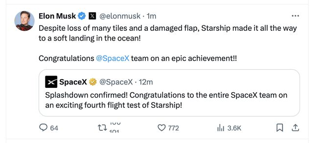

美国中部时间6日，美国太空探索技术公司的新一代重型运载火箭“星舰”以及飞船集成系统实施第四次试射，不但首次实现“海面软着陆”，同时获取了大量宝贵数据，为接下来取得更多突破铺平了道路。

当地时间6月6日，SpaceX公司进行了星际飞船的第四次飞行测试。视觉中国 图
“海面软着陆”重要吗？“星舰”朝完全重复使用能力迈了多大一步？要具备完全重复使用能力甚至实现登月目标，“星舰”还有哪些技术难关尚待攻破？
“星舰”是可回收、重复使用的航天运输系统。它由两部分组成，其第一级是长约70米的“超级重型”助推器，第二级是长约50米的“星舰”飞船。
此次试射完成后，太空探索技术公司创始人马斯克在社交媒体上说，尽管“星舰”飞船（即第二级）出现襟翼受损等情况，但仍然成功在“海面软着陆”。从直播画面来看，“星舰”6日从位于美国得克萨斯州博卡奇卡的基地发射升空，几分钟后第一级“超级重型”助推器和第二级“星舰”飞船成功“热分离”。随后，“超级重型”助推器在墨西哥湾溅落，飞船进入太空滑行阶段。发射约47分钟后，飞船受控再入大气层，最后在印度洋溅落。
就“溅落”技术细节，中国科学技术协会“科普中国”的航天科普专家田丰说，相较于高速入海、瞬间解体，第四次试射中，“星舰”飞船在距海面几千米高度，利用两组翼面的组合动作，从近水平姿态转换为垂直姿态，同时启动“猛禽”发动机进行反推减速……流程结束后，飞船的速度和高度降低，最终在发动机关机后“海面软着陆”。
“星舰”从第一次到第四次试射，进展越来越显著：2023年4月首次试射时，第一、二级分离前就发生了爆炸；2023年11月第二次试射时，第一、二级成功分离，但飞船在到达目标高度前爆炸；今年3月第三次试射时，发生“超级重型”助推器意外解体和飞船失联事故，但太空探索技术公司表示第三次试射取得多项新进展。
第四次试射的一个关键目标是“星舰”飞船在高温下受控再入地球大气层时能够“幸存”下来，以便让太空探索技术公司收集到更多宝贵数据。
据田丰介绍，第四次试射首次完成了整个发射流程，同时一级和二级的成功定点减速落海，也使整个“星舰”系统朝着“发射台捕获回收”情况下的完全重复使用目标推进了一大步。田丰说，第四次试射虽然暴露了其热防护系统仍存在缺陷，但完成了整个发射流程，尤其是一、二级最终成功反推减速、缓落入海，这为后续实现“发射台捕获回收”奠定了基础，“可以说是一次相对成功的发射”。
安徽星河动力装备科技有限公司董事长刘百奇说，“星舰”在这次试射中实现了一级回收，二级入轨回收。入轨回收难点在于大气层摩擦升温起火，可以看到二级有一部分烧坏了，但在轨道姿态受控的情况下也回来了，“飞船没有坏也没有解体”。
按计划，如果在此次试射中一级助推器成功实现“海面软着陆”，那么第五次试射可能尝试让助推器返回并降落在发射台上。
据太空探索技术公司发布的信息，“星舰”系统将通过不断试射和技术改进持续迭代，目标包括具备完全重复使用能力，在重复使用状态下将能够搭载高达150吨的载荷进入轨道，甚至运载人和货物前往月球、火星等。
刘百奇说，“星舰”系统是目前全世界最大的运载火箭，用飞行试验的方式快速迭代去探索航天技术未知的边界，这和完全成熟的技术是不一样的，可以说每一次探索几乎都取得了技术上的成功。
尽管第四次发射取得了很大进展，但田丰也指出，太空探索技术公司要实现其雄心壮志，还有四个关键难点需要攻克：热防护系统的改进，两级（助推器和飞船）回收和复用，“星舰”实际带载荷进入轨道，以及与登月相关的大规模低温推进剂在轨加注技术。